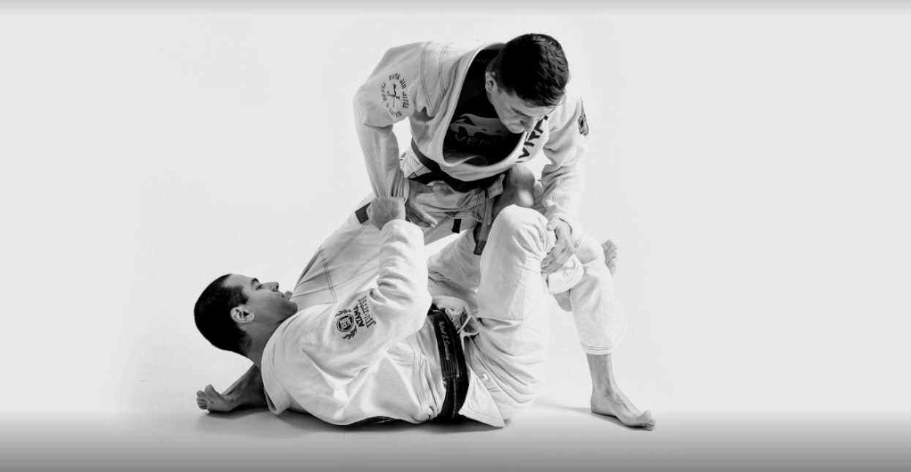

Nosso objetivo
Somos uma academia que prisma como filosofia de vida a prática da arte marcial como desenvolvimento da saúde física, mental e espiritual.
"Mais que uma arte, um estilo de vida!"
Nosso endereço
Estamos muito bem localizados, próximos ao metrô Conceição!
Benefícios do Jiu-Jitsu

- Aumenta a flexibilidade do corpo
- Promove a disciplina
- Ajuda na manutenção do peso
- Desenvolve a musculatura
- Fortalece diferentes grupos musculares ao mesmo tempo
- Desenvolve a coordenação motora
- Promove um grande alívio de estresse
- Melhora a agilidade e aguça os sentidos
- Melhora a autoestima
- Desenvolve o respeito pelo outro e por si mesmo